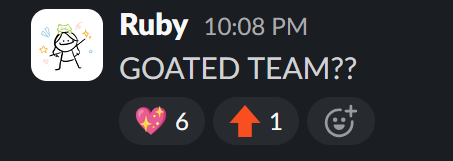

Four months, two name changes, and $2k+ spent on my Scrapyard HCB card later, it's February 28th, 2025 at 5:45 AM and I'm rushing my mom and youngest brother into our car so I don't miss my 7:55 AM flight to Austin, TX.
My internal monologue sounds a bit like this:
/ˈskrapˌyärd/
proper noun
A Hack Club hackathon that channeled the unfiltered creativity of thousands of high school students to “Build stupid stuff, [to] get stupid prizes."
Brought to life through a flagship event organized by the core team followed by dozens of satellite events in cities across the globe from Vancouver, Canada to Sydney, Australia organized completely by local teens.
March 1st, 2025 our team of 13 high schoolers held the Scrapyard flagship event at the FUTO headquarters in Austin, Texas for 70+ fellow high schoolers from the Austin area and from across the globe to build the stupidest projects they could dream up.
Two weeks after that, Hundreads of local teens ran over 60 Scrapyard Satellite Events.
They brought together thousands of teens in cities around the world to bring the Scrapyard experience globally after learning to fundraise, organize, and market their very own events.
Proud is an understatement to how I felt after running the flagship and attending Scrapyard Hamilton.
Scrapyard was the most fun I have ever had working on a project while simultaneously being the most time-costly adventure I've ever embarked on.
I wish I could capture all the magic that filled the events alongside the hundreds of mini plot lines that painted the story of Scrapyard, but I cant.
That said, the Scrapyard Documentary does a great job of summing up the magic of the Flagship event in a jam-packed 14 minutes and 50 seconds.
Over 7 months before the flagship, I sat on my first solo flight to Vancouver to attend the Boreal Express, one of Hack Club's flagship events for the summer of 2024.
I didn't know it at the time, but that experience changed the course of my life.
It sprouted my interest in technology, introduced me to some of my closest friends (and many of my co-organizers), and inspired me unlike anything ever before.
It was finally time for me to pay it forward.
My friend and co-organizer, Kevin* summed this feeling up beautifully in a message he sent me after the flagship (paraphrased):
The first message I sent to our organizing team at 10:08 PM October 21st, 2024 upon seeing the members added to our planning channel, was:
 I wholeheartedly stand by that statement to this day. Between organizing our own event and helping hundreds of teens do the same, our team worked tirelessly to make this all happen. I cannot thank our team enough.
Thank you to the satellite organizers, both who ran events and who couldn't; all of your hard work and perseverance gave me something to look up to. You all kept the vibrant energy going day after day, week after week.
Thank you to all the attendees of the Scrapyard Flagship and satellite events for making them as special and successful as they were.
Lastly, special acknowledgements to:
Lots of lightsabers
Your Ultimate Vibes Engineer™ 💖